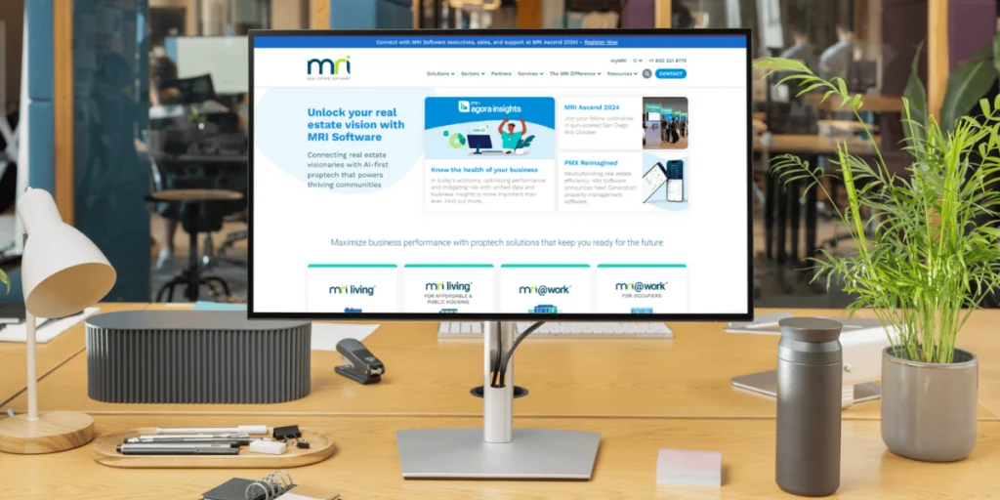
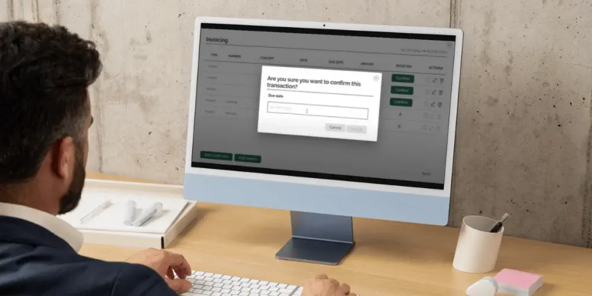

At Crenex, we are proud to announce our alliance as an Official Partner of MRI Software, a global leader in real estate solutions and services.
Our partner: MRI, a global leader in the real estate sector
Founded in 1971, MRI’s open and connected, AI-first platform empowers agents, owners, operators and occupiers in commercial and residential property organizations to innovate in rapidly changing markets.
With over 45,000 clients across more than 170 countries, MRI’s flexible, open, and connected platform is designed to meet the specific demands of real estate businesses.
An Open Ecosystem to Optimize Processes
MRI not only provides cutting-edge technology but also features an open ecosystem that facilitates integration with other platforms, such as Crenex. This ability to adapt to the unique needs of each client, combined with a global presence in key markets like the Americas, EMEA, and APAC establishes MRI as the ideal partner for companies seeking scalable and efficient solutions.

What does the alliance between Crenex and MRI consist of?
1. API integration for an efficient workflow
One of the most valuable aspects of this collaboration is the integration between our platforms via API. Through this connection, all lease management is centralized in Crenex.
The data from each transaction is transferred to MRI Property Management X for accounting and financial processing. This eliminates task duplication and enhances data accuracy.
What does this API integration entail?
Automation: Commercial and financial teams can work in coordination without the need for manual repetition of processes.
Simplified management: All relevant information is automatically shared between both platforms, streamlining invoice generation and payment reconciliation.
Real-time visibility: Both MRI and Crenex provide users with real-time access to key data on the status of invoices and payments, enhancing decision-making.
2. International Expansion and New Opportunities
The partnership with MRI not only enhances our technological integration but also strategically positions us to capitalize on new opportunities in the short-term leasing sector.
This collaboration will enable us to strengthen our global presence and adapt to the evolving dynamics of this market, offering our clients more effective solutions and superior service quality.

Crenex-MRI: A partnership that enhances excellence
At Crenex, we take pride in being at the forefront of innovation. This new partnership amplifies our capabilities and marks a milestone in the evolution of short-term leasing management. With deep integration, we are offering a solution that not only optimizes and digitizes processes but also transforms the way our clients manage their financial operations.
This partnership is a key step in our journey toward full digitalization of the industry, and we are excited about what the future holds for both our clients and us.
Thank you for your trust!
Want to learn more about this integration?